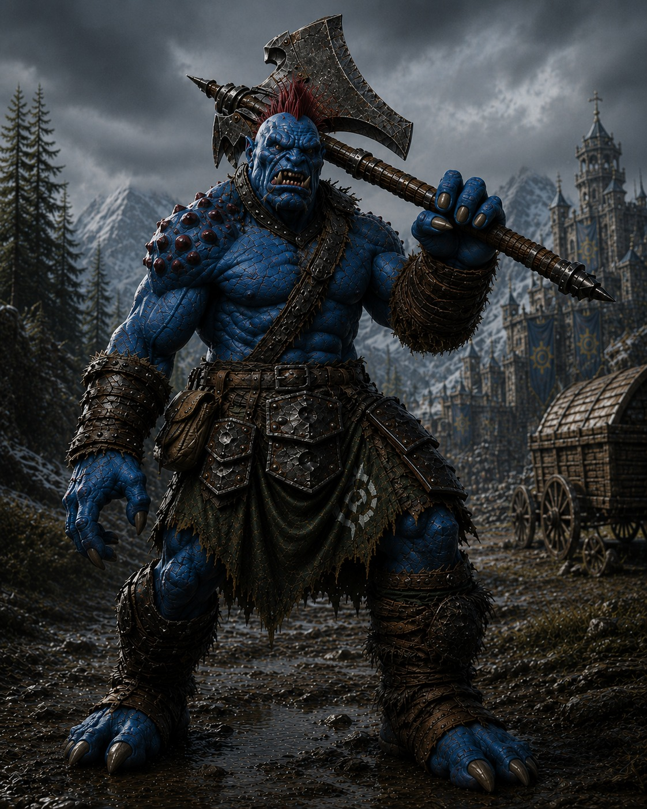
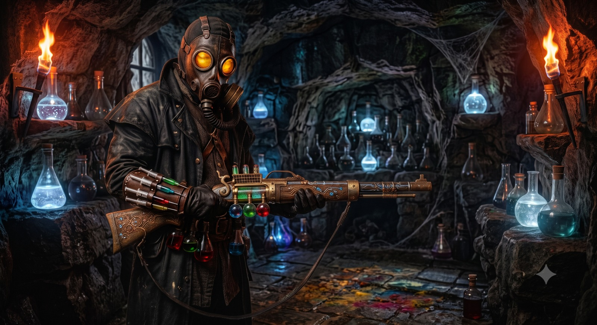
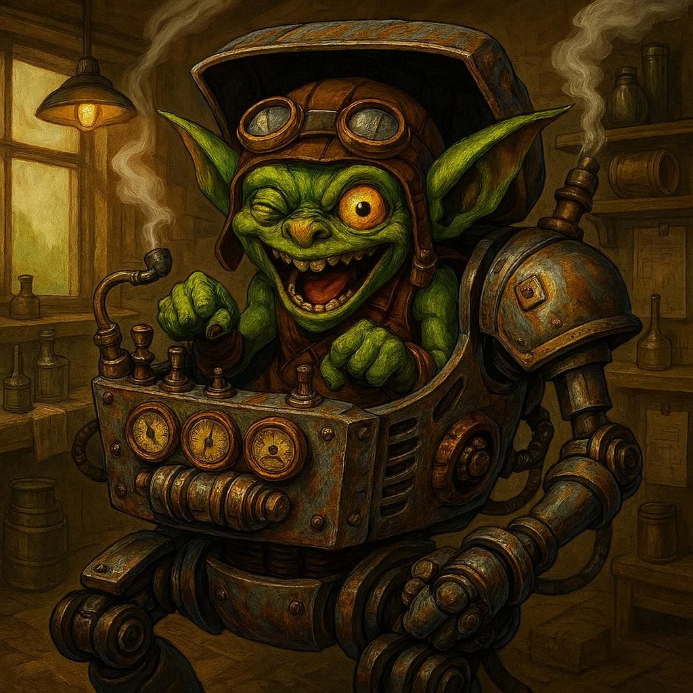

Trolloide bárbaro
Balanar
Mercenário de escolta, confiável nas estradas e difícil de derrubar quando a luta começa.
Ver página →Aventureiros da campanha
Os jogadores que entraram na névoa, sobreviveram ao pântano e agora carregam os primeiros fios do mistério.
Esta é a galeria narrativa dos aventureiros jogadores. Cada retrato abre uma página individual com papel no grupo, resumo em jogo e um espaço reservado para o background completo do personagem.
Escolta, emboscada, névoa e o pedido do Padre Dumas deram ao grupo o primeiro motivo para permanecer junto.

Trolloide bárbaro
Mercenário de escolta, confiável nas estradas e difícil de derrubar quando a luta começa.
Ver página →
Anão atirador
Um atirador rápido de Rhul, agora fugindo de uma relíquia roubada e de seus perseguidores.
Ver página →
Alquimista
Busca a Fórmula Suprema, a Cidade de Cor e o alquimista oculto por trás das iniciais J.T.
Ver página →
Gobber engenheiro
Sobreviveu a uma explosão rúnica e transformou sua genialidade quebrada em armadura mecanizada.
Ver página →
Ionniana druidesa
Uma druida andarilha das estrelas, guiada por uma visão de harmonia entre natureza e máquinas.
Ver página →Na primeira sessão, o time se mostrou bem equilibrado: Balanar e Mogglewog encaixaram o combate bruto; Dorgrim e Askin focaram na precisão e no dano; Lylianna trouxe controle, leitura do terreno e presença mística. Juntos, eles atravessaram o assalto no pântano com a carga intacta e abriram as portas do primeiro mistério de Corvis.